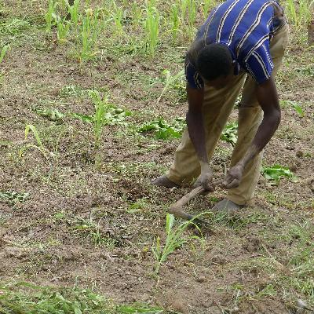
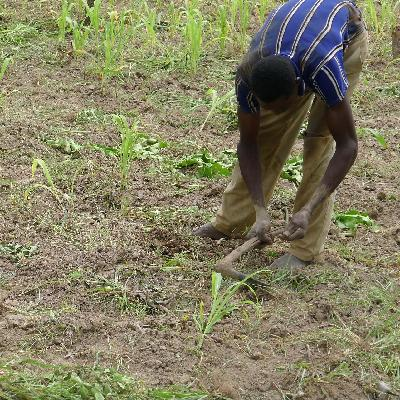

Like Thoreau, I took up farming to know farming. I lasted maybe five minutes, but took lots of pictures. Also, a few observations on who do that voodoo that some do so well.
A Little Bit Country
On Sunday, I biked out about 5 km along dirt paths to see my host family's two plots. They go out to work the fields pretty much every day, though my host father also has a full-time job at the local hospital, so he's not always out with his family.
One thing I'll say is that if anyone romanticizes the simple, traditional agrarian lifesyle, I'm going to smack them upside the head with a frozen lagane dinner and a plate full of ribs. Thank God I was a computer programmer, and not a farmer. See that animal pulling a plow in the 28th picture? That's what those people can go right on ahead and kiss. This farming thing is hard work, and not in the sense from the Canadian movie Goon, either.
After five minutes of me clearing weeds, and another hour of leaning against a shade tree and drinking water while I watched everyone else work I was exhausted! After that trauma (and running out of water), I headed straight back to Léo for lunch in a restaurant and a couple of beers.
I completely respect what they're doing, but it's hot, dusty, physically difficult, exhausting and repetitive. My appreciation for what the internal combustion engine has done for Western society over the past hundred-odd years has grown tenfold.
Here are some pictures. By the way, the reason I'm wearing the bicycle helmet is to keep the sun off my head. I had washed my hat that morning, and it was on the clothes line drying, so I just went with the UN-colored bike helmet.

 


Who do that Voodoo?
Not my host family, that's for sure! The traditional religion here is called “animism,” though some think this term is abusive. I've also seen it called “witchcraft,” which is another notch down the PC scale, methinks. You do see it around, like with objects placed in certain patterns, and a good chunk of folks here believe in it.
In our orientation, we were told not to greet our host family members before we had washed in the morning. I did that, but the body language I got when I was fetching my pail of water right in front of my host brothers was “what's wrong with this guy?” So, I started saying good morning to them, and it became clear to me that this was perfectly fine.
Well, yesterday in training I found out what the deal was. According to the traditional religion here, you have evil spirits on your face when you wake up, and it's bad luck for the other person if you say hello to them before you wash. But, my host father Yacoba is an intelligent, educated, fairly sophisticated man. He might be illiterate, but he's a smart guy. He's also a devout muslim, and that means that he learns a lot from his imam, who seemed like a smart guy when I met him on the festival of the end of Ramadan.
So, today I talked to Yacoba about this, and yes, it is a traditional belief. And yes, it's largely because of the teachings of islam that he and his family aren't big into the voodoo, I mean traditional religion. That's not universally true, apparently – many people here are either muslim or Christian, but also believe in some or all of the traditional religion.
So that was interesting. Here is a living, breathing example of islam as a progressive social force, spreading education and dispelling superstition. And a heck of a nice guy, too.